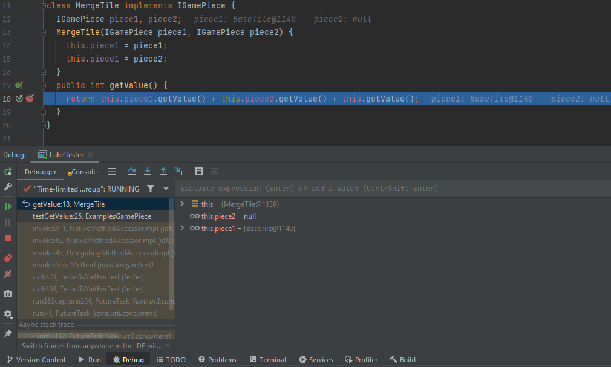
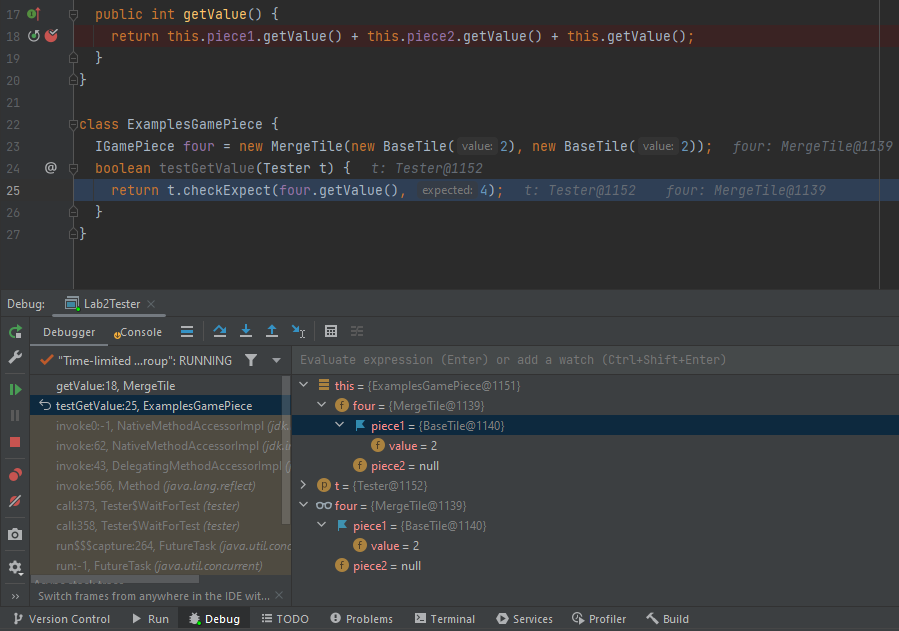

Recitation 2: Working with Self-Referential Data
Goals: The goals of this recitation are to review data definitions and practice designing self-referential classes and data, then design methods for a variety of class herarchies.
For this recitation, there are no starter files. For each problem, start a new project and build the files from scratch.
1 Guided examples
This section provides a guided walkthrough of translating Fundies 1-style data definitions into Java. If you feel confident in this, skip to the next section below to begin this recitation’s exercises.
1.1 Initial scenario
Suppose we want to represent people and their modes of transportation, namely bicycles and cars. First, come up with some examples:
Bob has a Diamondback bicycle.
Ben has a Toyota which gets 30 miles per gallon.
Becca has a Lamborghini which gets 17 miles per gallon.
One way to represent this information is as follows:
;; A MOT (ModeOfTransportation) is one of ;; -- Bicycle ;; -- Car ;; A Bicycle is a (make-bicycle String) (define-struct bicycle (brand)) ;; A Car is a (make-car String Number) (define-struct car (make mpg)) ;; A Person is a (make-person String MOT) (define-struct person (name mot)) (define diamondback (make-bicycle "Diamondback")) (define toyota (make-car "Toyota" 30)) (define lamborghini (make-car "Lamborghini" 17)) (define bob (make-person "Bob" diamondback)) (define ben (make-person "Ben" toyota)) (define becca (make-person "Becca" lamborghini))
Following Lecture 2, we can convert these data definitions into Java:
// Represents a mode of transportation interface IMOT {} // Represents a bicycle as a mode of transportation class Bicycle implements IMOT { String brand; Bicycle(String brand) { this.brand = brand; } } // Represents a car as a mode of transportation class Car implements IMOT { String make; int mpg; // represents the fuel efficiency in miles per gallon Car(String make, int mpg) { this.make = make; this.mpg = mpg; } } // Keeps track of how a person is transported class Person { String name; IMOT mot; Person(String name, IMOT mot) { this.name = name; this.mot = mot; } }
Then, our examples would become the following:
class ExamplesPerson { IMOT diamondback = new Bicycle("Diamondback"); IMOT toyota = new Car("Toyota", 30); IMOT lamborghini = new Car("Lamborghini", 17); Person bob = new Person("Bob", diamondback); Person ben = new Person("Ben", toyota); Person becca = new Person("Becca", lamborghini); }
Now that we have our data definitions and examples, let’s try to write a method. Consider the following purpose statement:
// Does this person's mode of transportation meet the given fuel // efficiency target (in miles per gallon)?
Do Now!
How would you design a function like this in BSL?
Following the same design recipe steps as always, we need a purpose statement (given to us), a signature, some examples, and a template. Let’s reorder these steps slightly, and first try to determine the template for this function, i.e. what data this method will work on. This will help us decide which interface or class should contain the method’s implementation. The wording “this person’s”suggests that this should be within the Person class, since it will be evaluating a person’s method of transportation.
Next, we need to figure out the signature. A mode of transportation either meets a target fuel efficiency or it doesn’t, so it would make sense for this method to return a boolean. Finally, we need to figure out this methods parameters (or if it even needs any). In this case, the method needs to be provided a target fuel efficiency, so one paramter int mpg should work. So our method header will look like the following:
// In the Person class: boolean motMeetsFuelEfficiency(int mpg) { ... }
Do Now!
Now that we have a signature and purpose, and figured out which class this method should be in, create some examples for how this method should behave.
Now it’s time to try to implement the method, and to do that we need to work thorugh our available template. In doing so, we quickly realize that we do not have enough information. The only fields inside Person are String name and IMOT mot, neither of which can be directly compared to the given input.
Do Now!
Why do we not want to simply write a getMpg method on IMOT and its implementing classes?
1.2 Solution: delegation
Because Person doesn’t have enough information directly available, we need to find an available object of some other interface or class, and ask it to finish the work for us and return to us the answer. We call this approach delegation. In this example, we would likely want to delegate the work to the IMOT interface because the modes of transportation are the only ones that can truly tell us whether or not they are more fuel efficient than the given target fuel efficiency. Luckily, the result we want from this “wish list” method is the same as the return type for the method we are writing. Also, this new method would need the same input as our current method in order to evaluate fuel efficiency. Therefore, we could add this method header to IMOT:
// in IMOT // returns true if this mode of transportation is at least // as efficient as the given mpg, false otherwise boolean isMoreFuelEfficientThan(int mpg);
Now, before we actually implement this method in Bicycle and Car, let’s finish the method in Person assuming that our new method will work as intended. Since we now have this method on IMOT, we can simply invoke the method and return the result:
// in Person boolean motMeetsFuelEfficiency(int mpg) { return this.mot.isMoreFuelEfficientThan(mpg); }
Then, we can finish up the method in Bicycle:
// in Bicycle // a bicycle does not consume fuel, so it will always be more fuel efficient boolean isMoreFuelEfficientThan(int mpg) { return true; }
and Car:
// in Car // compare this car's fuel efficiency to the given fuel efficiency boolean isMoreFuelEfficientThan(int mpg) { return this.mpg >= mpg; }
Do Now!
Write tests on our examples for a target fuel efficiency of 15 mpg. What about 25 mpg?
Exercise
How would we do this if we wanted to compare to another mode of transportation’s fuel efficiency instead of a given target fuel efficiency? More precisely, what if we wanted to change the method header in Person to the following:
boolean motIsMoreFuelEfficientThan(IMOT mot) Where do you get stuck?
2 Methods for Structured Data
Here are some unfinished classes that represent pets and pet owners:
// to represent a pet owner class Person { String name; IPet pet; int age; Person(String name, IPet pet, int age) { this.name = name; this.pet = pet; this.age = age; } }
// to represent a pet interface IPet { } // to represent a pet cat class Cat implements IPet { String name; String kind; boolean longhaired; Cat(String name, String kind, boolean longhaired) { this.name = name; this.kind = kind; this.longhaired = longhaired; } } // to represent a pet dog class Dog implements IPet { String name; String kind; boolean male; Dog(String name, String kind, boolean male) { this.name = name; this.kind = kind; this.male = male; } }
Follow the design recipe to design the following methods for these classes:
Make examples of at least four pet owners - two for each of the pets, as you need to make sure you cover the two boolean values.
Design a method with the following purpose and header:
// is this Person older than the given Person? boolean isOlder(Person other) Design a method sameNamePet that has the following purpose statement:
// does the name of this person's pet match the given name? We’ve given you the purpose statement, so start with examples and the template. When you make the template for the class Person, you should notice that you do not know anything about the pet’s name. You will therefore need a helper method, somewhere in the class hierarchy that represents IPets, that will check whether this pet’s name matches the given name.
But to design such a method, you first need to define the purpose statements and the header in the interface IPet. Remember, Java requires that this method be declared public - though at this time, for our simple programs, this designation is irrelevant.
We will soon learn how we can avoid the extra work.
You then need to define this method in every class that implements the interface.Some people do not have pets, and sometimes–sadly–the pets do perish. Add a new class NoPet to this class hierarchy so that we can represent Persons who do not have a pet.
Make sure you add new examples!
Design a method perish in the class Person that produces a person whose pet has perished.
(To be continued below.)
3 Self-Referential Data
Note: This problem is separate from the others in this recitation; nevertheless, work on this problem before continuing with lists, below.
The sliding-tiles game 2048 was all the rage a couple of years ago. The gameplay itself is not that complicated, but since we don’t have all the necessary skills yet, we aren’t going to implement the full game right now. Instead, we’re going to model some of the data behind the gameplay.
Conceptually, a game piece is either a base tile or a merge tile that has two component tiles it merged from. Every game piece can tell you its value, and can merge with another game piece to form a combined tile. Assume all base tiles will have a positive, integer value: for 2048, the default starting value is 2.
;; A GamePiece is one of ;; -- (make-base-tile Number) ;; -- (make-merge-tile GamePiece GamePiece) (define-struct base-tile [value]) (define-struct merge-tile [piece1 piece2])
Convert this data definition into Java classes and interfaces. Make examples of several merged tiles.
With the game-piece classes above, design the following:
Design a method countBaseTiles that tells you how much time you've wasted playing 2048 returns the number of base tiles that were used to form the current tile.
Design a method getValue that returns the value of a game piece. The value of a merged tile is always the sum of the values of its components.
- Design a method merge that combines this game piece with the given game piece to form a merged piece. (Ignore the precise validity-checking rules of 2048 for now; suppose that any two tiles can be merged.)
We’ll learn soon how to enforce these rules, and also how to generalize them to variations on 2048’s gameplay.
Design a method isValid that checks whether this game piece was created according to the rules of 2048: only equal-valued pieces can merge.
Design a method longestChain that counts the length of the longest path from the current node to any of its base tiles: in other words, how many times any given base tile was merged into another tile in this particular game piece’s construction.
Note: Throughout this recitation make sure you follow the rule one task – one method and design each method in the class that should be responsible for it.
4 Guided Examples: Using the debugger
This section introduces you to working with the debugger, the equivalent of the stepper in DrRacket. The debugger is more powerful than the stepper, and allows you to pause your program at a particular line, examine the variables available to you, examine the call stack, and many other abilities too. This is necessarily a very brief introduction, and you will learn more about the debugger over time simply by using it and experimenting with it on your own.
Note: using the debugger will not help you fix compile-time errors (like type-mismatches or using a name that doesn’t exist). It can only help you once your program compiles but does not run correctly. IntelliJ will warn you that your code has compile errors before running; you should get in the habit of fixing them, rather than ignoring the warning! Luckily for us, IntelliJ runs the most recent code and changes made to your code, so upon immediately fixing the compile error, we can run our current code. Unfortunately, code is prone to bugs, and not every piece of code that runs is successful at it’s description.
4.1 Breaking into the debugger
To use the debugger, click the green bug icon in the toolbar instead of the green circle/triangle Run icon: Most likely, nothing interesting happens: your program simply runs, just as it did before. However, let’s suppose that your code has an error, and you’d like to figure out why.
import tester.*; // NOTE: Templates and purpose statements left out: You should fill them in yourself! interface IGamePiece { int getValue(); } class BaseTile implements IGamePiece { int value; BaseTile(int value) { this.value = value; } public int getValue() { return this.value; } } class MergeTile implements IGamePiece { IGamePiece piece1, piece2; MergeTile(IGamePiece piece1, IGamePiece piece2) { this.piece1 = piece1; this.piece1 = piece2; } public int getValue() { return this.piece1.getValue() + this.piece2.getValue() + this.getValue(); } } class ExamplesGamePiece { IGamePiece four = new MergeTile(new BaseTile(2), new BaseTile(2)); boolean testGetValue(Tester t) { return t.checkExpect(four.getValue(), 4); } }
Do Now!
What implementation mistakes do you see in the code above? (Ignore the lack of purpose statements and templates: those are deliberate since we do not intend to give you the answer here!) Write down your predictions first, before running this code.
Do Now!
Try clicking on these links, yourself. What happens when you click on a link that doesn’t belong to your own code?
The NullPointerException is clickable too, but it controls something else: a different kind of breakpoint besides the ones we’ll discuss below. If you’re curious, try coming back to this after you’ve tried the other fixes below, and try enabling this breakpoint. You’ll want to explore the Breakpoints tab, too, once you’ve done this, in order to delete this breakpoint once you’re done with it!
Do Now!
What line of code do you think might be useful to pause on? Why?

This will toggle a breakpoint. Visually, this will add a little red circle in the margin to the right of the line number. That signifies a breakpoint, which will cause your program to pause whenever you execute your program in debugging mode, and execution reaches that line. You can repeat this process to remove the breakpoint again, when you’re done debugging the problem.
Press the Debug button to launch your program. You should see a Debugger window pop up:

Most important: At the upper-right in the toolbar, you should see the icons for Run, Debug and Stop. (You might not see the words, just the icons.) You can click Stop to get back to your original window layout or click Ctrl + F2.
In the top left of the Debug tab it shows you the current call stack. You can click on lines of the call stack to jump to the relevant line of code. (Right now, line 18 is focused.)
At the top left of the Debug window, the Console tab shows the current output of your program.
In the middle, the Variables tab shows you the variables that are currently in scope. Right now, the only variable available is this.
On the side-left of the Debug toolbar, you’ll see several icons related to stepping: From left to right, these are: Resume the program, Pause the current program, Stop debugging, Disconnect, Step into the next method call, Step over the next method call, and Step out of the current method. You can ignore Disconnect entirely; the others will be useful.
4.2 Stepping into, viewing Variables, thinking about the stack
Do Now!
Double-click on this in the Variables tab, or click on the expansion arrow to its left, to see the fields that it has. Also try hovering over this, this.piece1 and this.piece2 in the code area. What do you see?
Do Now!
Can you figure out the first bug in the code above?
Do Now!
List all the changes that just happened.
Hover over this and this.value in the code area. You should see that the values look fine. Press any of the stepper buttons once to continue. (In this setting, all three stepper buttons do the same thing, since we are at the point of returning from a method, so there is nothing to step into or over. Don’t use the Resume button here; that will run your program until it encounters the next breakpoint, and there might not be any more breakpoints.) The active line moves back to line 18. Evidently, the call to this.piece1.getValue() has succeeded. Press Step into again, to try the next call to this.piece2.getValue(). Suddenly everything breaks, and you’re taken to the constructor for a NullPointerException. Suspicion confirmed: the fact that piece2 is null is the problem.
Do Now!
Will this help? Why or why not?
Do Now!
Debug the program. When you get to line 14, double-click the this in the Variables tab. Press Step into once, and observe the changes in the Variables tab. What line gets highlighted yellow? Press Step into once more. What happens?
Since piece2 remains null, evidently our mistake must be here. Carefully reading the code reveals the typo: we initialized piece1 twice by mistake.
Do Now!
Press Stop to stop the program. Fix the code, and debug it again. This time, when you get to line 14, press the Resume button to keep running after the breakpoint. What happens now?
4.3 Stepping over, stepping out
We have another problem: the tester library reports stack overflowed while running test. This means that we have an unbounded recursion somewhere in our program. Looking at the stack trace (be sure to scroll to the very top) is quite boring: it consists of hundreds of red lines all blaming line 18 of our program.
Do Now!
Clear all the breakpoints you currently have, and put a breakpoint on line 18 again. Debug the program.
When you get to line 18, start stepping through the program again. Using Step into is tedious, since it will take us into the BaseTile implementations. Using the other two stepper buttons doesn’t seem to work. This is because we have three method calls all on one line, and IntelliJ is quite simplistic when it comes breakpoints and to your program’s layout. Add newlines before the plus signs on line 18, to split the three method calls onto three separate lines. Now, you can successfully use Step over to run the entirety of this.piece1.getValue() as a single step, and similarly for this.piece2.getValue(). Now use Step into to step into the call to this.getValue(). The stack trace in the Debug tab has grown, and nothing else has changed. Keep doing this a few times, until you recognize the problem: we are recurring into the exact same method on the exact same object – of course we’re stuck in an infinite recursion! This implementation does not properly follow the template: fix it, by eliminating the call to this.getValue() altogether, since it’s unneeded.
Stop and then debug the program one more time, to confirm that it works properly. Finally, click on Java in the upper-right toolbar to get back to the normal code-editing window layout.
5 Working with lists
Start a new project and copy into it all the files you have already defined for the Persons and IPets. Add the necessary class and interface definitions so that a person may have more than one pet.
Draw the class diagram for the entire collection of classes and interfaces.
Now that Persons can have more than one IPet, we can’t simply ask whether their pet has the same name as the given one; we instead need to ask whether a Person hasPetNamed some given name, which then determines whether the person has a pet with the given name.
This might not be a small change... Make sure you change all that is needed, including adding templates wherever necessary, changing the test cases, etc.
Now that Persons can have lists of IPets, they can easily have an empty list of pets. So we no longer need the class NoPet to mark not having a pet. Get rid of this class.
Also, for now just eliminate the method perish.
Exercise
Handling pets that perish is tricky: we can’t just replace them with NoPet, or with MtLoPet, since there might be other IPets remaining. To modify the method so it can work with a list of pets would require removing the pet with the given name from the list of pets this person owns. Try to do this. (Hint: you’ll need one or more helper methods.)